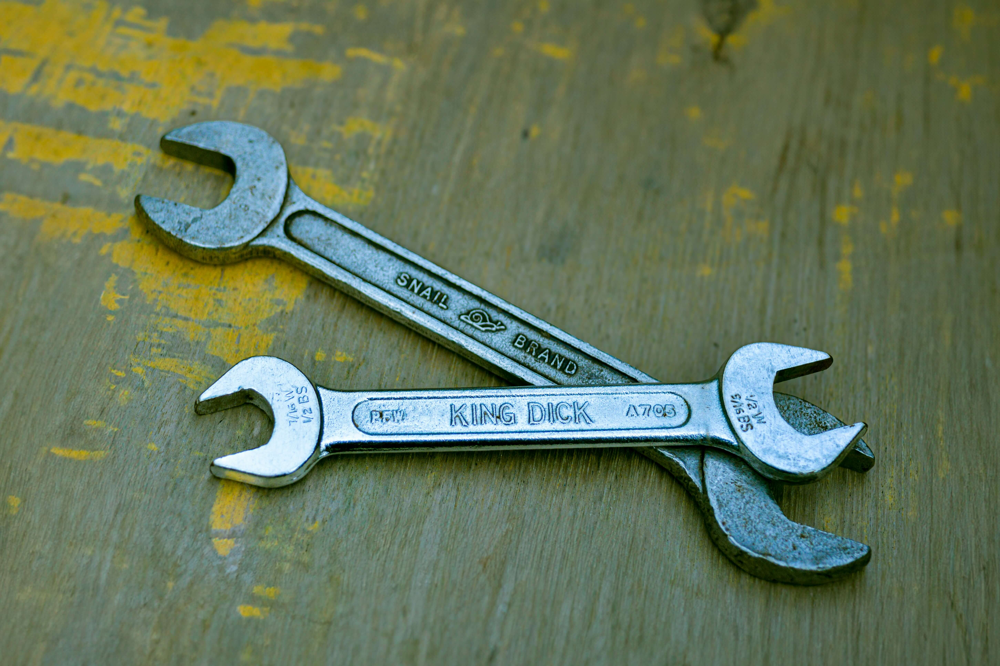
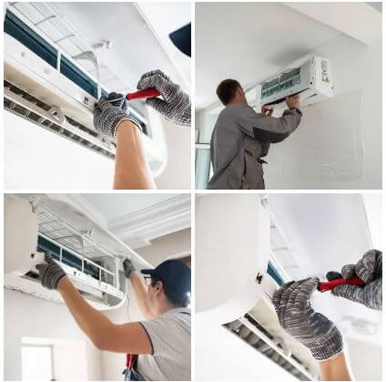
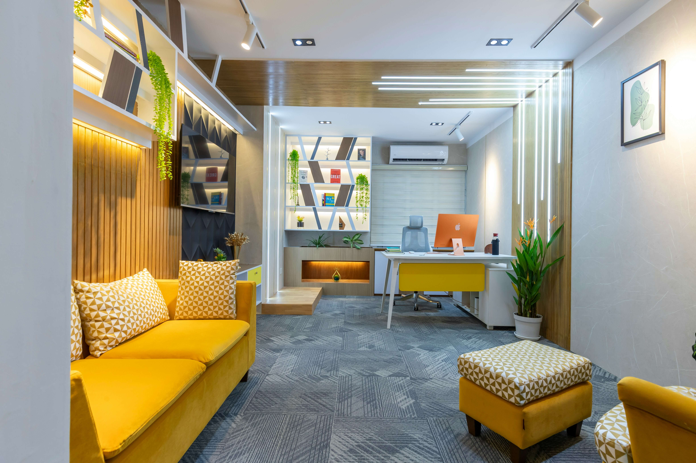
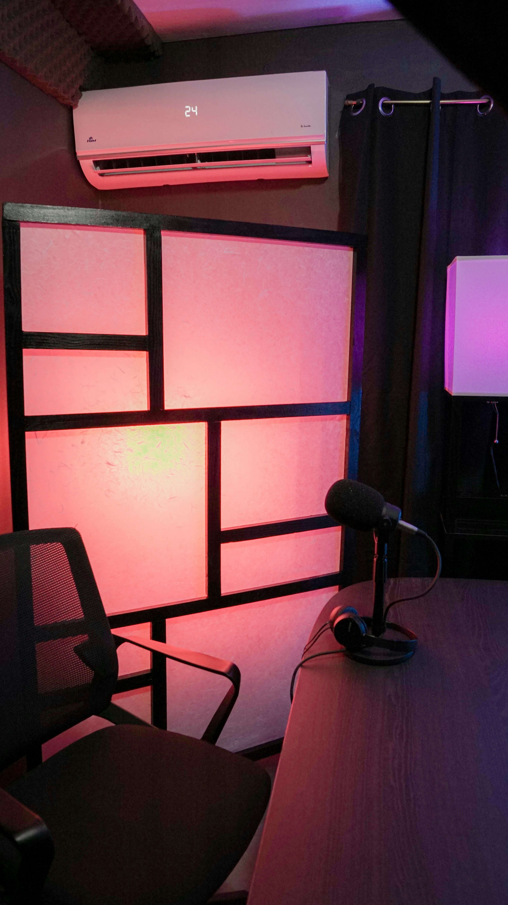

Najčešći kvarovi klima uređaja
Kako prepoznati kvarove i spriječiti veće probleme te kad je vrijeme pozvati stručnjaka...

Zašto je važan godišnji servis klima uređaja
Održavanje klima uređaja produljuje vijek trajanja i štedi novac, saznajte što servis uključuje...

Kako odabrati pravi klima uređaj
Izbjegnite najčešće pogreške pri kupnji i odaberite uređaj prema prostoru i potrebama...

Inverter klima vs klasična – što odabrati?
Usporedba klasičnih i inverter klima uređaja – što je učinkovitije i štedljivije...

Kako pripremiti klima uređaj za sezonu
Provedite jednostavne korake pripreme i izbjegnite kvarove tijekom ljeta ili zime...